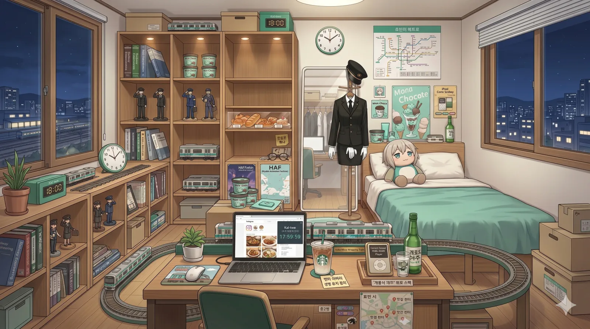

효빈교통공사 캐릭터들
| 등 장 인 물 |
1호선 | 2호선 | 3호선 | 4호선 | 5호선 | 창전선 |
|---|---|---|---|---|---|---|
 고나미 고나미 |
 하루빈 하루빈 |
 박라미 박라미 |
 다로나 다로나 |
 미소하 미소하 |
 심세이 심세이 |
|
| 6호선 | 7호선 | 8호선 | 빈효선* | |||
 라세나 라세나 |
 임세정 임세정 |
 임세하 임세하 |
 유리아 유리아 |
 전노아 전노아 |
||
|
* 빈효선: 노선 운영은 효빈교통공사가 아닌 코레일(한국철도공사)이 담당하지만, 지역 인프라 특성상 같이 묶여서 캐릭터 사업으로 진행됨. * 창전선 (본 문서 캐릭터 소속) 등 신규 노선은 개통 및 캐릭터 정식 데뷔 시점에 맞춰 틀에 추가될 예정입니다. (현재 심세이 정식 등재 완료) |
||||||
- 1. 개요
- 2. 상세 설정
- 2.1. 성격 및 특징
- 2.2. 학업 및 능력
- 2.3. 정치 성향
- 2.4. 외형 및 디자인
- 2.5. 목소리 및 성우 연기
- 3. 인간 관계
- 4. 러닝 개그 및 트리거
- 5. 여담
- 6. 미디어 믹스 및 굿즈
1. 개요
"어쩌라고... 그치~? 내 말이 맞죠~? (점심 메뉴 고르며 뇌절 중)"
효빈권 광역전철 2호선을 상징하는 마스코트 캐릭터. 2004년에 데뷔했다. 직업은 고객과 가장 최전선에서 부대끼는 감정노동의 끝판왕 '역무원'이며, 주로 유동인구 헬게이트로 악명 높은 어간중앙역이나 대학가 인근 역의 정보데스크에 서식(?)하고 있다.
효빈메트로 캐릭터 인기 투표에서 특유의 능글맞음과 둥글둥글한 외모로 항상 최상위권을 휩쓰는 자타공인 간판스타이다. 붙임성 MAX의 명랑한 '파워 인싸' 성격으로 대외적으로 묘사되지만, 그 화려한 서비스용 미소 이면에는 퇴근 5분 전부터 가방을 매고 모니터 시계만 노려보는 지극히 현실적인 K-직장인의 애환이 짙게 배어 있다. 2호선의 최초 개통일인 2월 3일이 생일인데, 공교롭게도 2호선의 모든 연장 개통일이 하필이면 하루빈의 생일파티 날짜에 강제로 맞춰져 있다는 끔찍한(?) 징크스가 있다. 생일 선물로 야근을 주는 악덕 기업 효빈교통공사
2. 상세 설정

2.1. 성격 및 특징 (자본주의 미소의 달인)
"웃으면서 뼈 때리는 처세술 만렙". 친화력이 가히 소름 돋는 수준이라, 막무가내로 소리를 지르는 진상 취객도 5분 만에 "아이고 아버님~ 여기서 이러시면 저희 시말서 써요오~" 하는 능구렁이 같은 화술로 기분 좋게 밖으로 돌려보내는 기적을 행한다. 민원 완충과 부서 내 갈등 중재에 탁월하여 타 부서 팀장들도 호시탐탐 노리는 S급 인재다. 심지어 원리원칙의 대명사이자 융통성 제로인 직속 선배 고나미가 규정 위반을 꼬투리 잡아 사자후를 내질러도, 1초의 망설임 없이 "선배님 목 아프시죠? 오늘 점심 마라탕은 제가 쏩니다!"라며 능글맞게 넘겨버리는 우주 방어급 탱킹력을 자랑한다.
하지만 속마음은 그 누구보다 철저하게 계산적이고 현실적이다. 공기업 직원으로서의 숭고한 사명감 따위는 일찌감치 한강에 던져버렸으며, '내 작고 소중한 월급'과 '워라밸' 수호가 그녀 삶의 최우선 종교다. 평소에는 정보데스크에서 멍때리거나 은근슬쩍 웹서핑을 하는 등 합법적 월급루팡 짓을 일삼지만, 안전사고 위험 상황이나 진상 고객이 선을 세게 넘는 순간, 실실대던 입꼬리가 싹 내려가고 영하 10도 급의 '본사 직원 톤'으로 현장을 싸늘하게 통제하는 무서운 갭 모에가 있다. 팬들은 이 살벌한 모드를 두고 '마아야 모드 ON'이라고 부르며 환호한다.
2.2. 학업 및 업무 능력
전형적인 '수학을 유기한 문과 감성 공대생'. 고송초-소요중-효빈종합고를 거쳐 효빈대학교에 진학했다. 학창 시절 성적표를 보면 담당 교사가 헛웃음을 칠 정도로 과목별 편차가 극단적이었다.
| 구분 | 상세 내용 |
|---|---|
| 학업 성향 |
언어·인문 몰빵형 (입 털기 최적화)
국어 1~2등급
영어 1~2등급
사회 1~2등급
수학 4~5등급
종합 내신 2.4~2.9. |
| 업무 역량 |
대인 커뮤니케이션 최상, 악성 민원 방어력(SSS급) 수학/기계적 이해도는 심각하게 낮음. 누가 제동거리 계산식이나 배선도를 물어보면 환하게 웃으며 "기술본부 연결해 드릴게요~" 라며 도망친다. |
| 특수 스킬 | 숨덕 탐지 레이더, 찰진 별명 제조기, 성우 뺨치는 안내방송, 사각지대에서 짱박히기 |
숫자와 기호만 보면 두통을 호소하는 중증 수포자(수학 포기자)라 복잡한 기계 원리는 깔끔하게 뇌에서 포맷해 버렸다. 대신 특유의 현란한 말빨과 압도적인 면접 스킬, 영혼을 갈아 넣은 자소서로 효빈대 교통대학 철도운영시스템공학과(비교적 문과 성향이 짙은 운영 전공)에 기어코 합격해 낸 의지의 한국인이다. 영어를 비롯한 외국어에도 능통해 어간중앙역에 쏟아지는 길 잃은 외국인 관광객들에게 한 줄기 빛과 소금이 되어준다.
2.3. 정치 성향
"내 통장에 돈 꽂아주고 칼퇴 시켜주는 사람이 곧 내 주군이다."
철저한 생계형 지지자. 좌우 이념이나 거창한 시정 목표 따위는 알 바 아니고, 오직 "누가 우리 공사 예산을 늘려주고 탕비실 간식을 빵빵하게 채워주는가?"가 그녀의 유일한 정치적 판단 기준이다.
對 윤대환 (전 시장): 치를 떨며 극혐함.
윤대환 전 시장 시절, 무자비한 인력 감축과 구조조정으로 인해 선배 역무원들이 화장실 갈 시간도 없이 굴렀던 피눈물 나는 썰을 귀에 못이 박이도록 들었다. 실제로 자신이 입사했을 때 업무 강도가 헬게이트가 될 뻔했기에 생존 본능적으로 극도의 거부감을 가진다. 하루빈의 머릿속에서 윤대환은 "일은 2배로 시키면서 야근 수당은 입 싹 닦는 최악의 꼰대 상사" 그 자체다.
對 박효빈 (현 시장): 무한 찬양 (빛효빈, 갓효빈).
하루빈이 현 박효빈 시장에게 절대적인 충성을 바치는 데는 결정적인 이유가 있다. 바로 박효빈 시장 본인이 흙수저 기초생활수급자 출신이라는 점이다. 복지 수혜자 출신답게 복지와 노동 환경의 중요성을 누구보다 뼈저리게 알고 있는 박 시장은 취임 이후 역무원 안전 인력을 대폭 충원해 스케줄에 숨통을 트여 주었다.
무엇보다 사내 복지 예산이나 휴게 시설 개선 예산이 깎이기는커녕 매년 대폭 폭주 상승 중이라, 각 역사의 탕비실에는 최고급 커피머신과 무제한 간식이 보급되고 있다. 하루빈 입장에서는 '내 칼퇴와 간식 창고를 지켜주는 완벽한 성군'인 셈. 동료들과 커피를 마실 때면 "역시 고생해 본 사람이 밑바닥을 안다니까? 빛효빈 시장님 충성충성~"을 외치며 선거철마다 사실상 캠프 선거운동원 급으로 입을 털고 다닌다.
2.4. 외형 및 디자인
푸른빛이 감도는 짙은 흑발을 시원하게 묶어 올린 포니테일 스타일이 특징이다. 생기 넘치는 크고 둥근 파란색 눈동자와 언제나 입가에 걸려 있는 환한 미소는 보는 사람마저 기분 좋게 만들지만... 사실 저 미소의 9할은 무사히 칼퇴하기 위해 억지로 끌어올린 완벽한 '자본주의 미소'다. (퇴근 10분 전부터는 진심에서 우러나오는 찐웃음으로 바뀐다.)
복장은 2호선의 상징색인 초록색(#00CCAA)이 메인일 것이라는 예상을 깨고, 시크한 올블랙(All-black) 제복을 착용하고 있다. 금장 단추가 돋보이는 검은색 재킷과 몸에 핏되는 검은색 미니스커트, 단정한 검은 넥타이와 흰 장갑, 그리고 각 잡힌 정모(모자)까지 갖춰 입어 겉보기엔 그야말로 신뢰감 100%의 모범 역무원 그 자체다. 물론 이 완벽하고 깔끔한 유니폼 핏을 유지한 채 CCTV 사각지대에 숨어 월급루팡 짓을 한다는 게 함정이다.
쾌활하게 손가락을 뻗으며 길 안내하는 듯한 역동적인 포즈와 육감적이고 건강미 넘치는 몸매 라인도 돋보이는 포인트. 깐깐하고 찔러도 피 한 방울 안 나올 것 같은 1호선 고나미와는 정반대로, 전체적으로 선이 부드럽고 친근한 '파워 인싸'의 기운이 온몸에서 뿜어져 나오는 비주얼이다.
 사복 (성수동 핫플 탐방 모드)
사복 (성수동 핫플 탐방 모드)
칼퇴 후 핫한 카페를 돌 때의 기본 장착. 포근한 카디건과 청치마 매치로 특유의 쾌활하고 스포티한 인싸미를 배가시킨다.
 사내 할로윈 이벤트
사내 할로윈 이벤트
사내 고객 감사 이벤트로 입었던 메이드복. 다소 작게 나온 사이즈 덕에 그녀의 숨겨진 장갑(B95)이 강조되며 원래 의도했던 아기자기한 컨셉이 파괴(?)되었다.
2.5. 목소리 및 성우 연기
기본적인 목소리는 이른바 '솔(Sol)' 톤을 유지하는 하이텐션 서비스직 톤이다. 민원인을 상대할 때나 안내방송을 할 때는 꿀이 뚝뚝 떨어지는 친절한 목소리를 내지만, 진상 고객을 상대하거나 퇴근 시간 직전에 야근 지시가 떨어지면 텐션이 지하 암반수까지 추락하며 서늘한 목소리로 돌변하는 갭 모에가 일품이다.
-
한국판 (CV. 김선혜)
한국판 담당 성우인 김선혜는 명실상부 명탐정 코난의 에도가와 코난 역으로 전 국민적인 인지도를 자랑하는 성우다. 평소에는 명랑하고 싹싹한 20대 사회초년생의 목소리로 고객을 응대하다가도, 무임승차자나 부정승차자를 적발하는 순간 안경을 슥 치켜올리는 제스처와 함께 코난 특유의 날카롭고 지적인 톤으로 돌변하여 팩트 폭격을 날린다. "진실은 언제나 하나! 고객님, 방금 개찰구 밑으로 기어서 통과하셨죠?"라고 읊조리는 순간 범인(?)들은 오금을 저리며 지갑을 꺼내게 된다고.내 이름은 하루빈, 역무원이죠. -
일본판 (CV. 우치다 마아야)
일본판 담당 성우인 우치다 마아야는 '중2병이라도 사랑이 하고 싶어!'의 타카나시 릿카, '아이돌 마스터 신데렐라 걸즈'의 칸자키 란코 등 중2병 캐릭터 연기의 스페셜리스트다. 이 때문에 하루빈이 극도로 피곤하거나 멘탈이 나갔을 때 성우 특유의 중2병 속성이 강제로 발동된다. 악성 진상 고객의 폭언을 듣고 혼이 나갔을 때 자신도 모르게 "어둠의 불꽃에 휩싸여 사라져라...!" 같은 대사를 중얼거리거나, 스크린도어 제어실 안에서 오른손을 부여잡고 흑염룡 드립을 치는 통에 지나가던 고나미에게 뒷덜미 잡히는 기믹이 추가되었다.
2.6. 작중 행적
본편 애니메이션인 《철도부! - 애프터 스쿨 미라클 -》을 비롯하여 철덕일기, 레일루미네 등 각종 미디어 믹스에서 하루빈이 남긴 '합법적 월급루팡'이자 '처세술 만렙'으로서의 행적을 다루는 문단. 고나미의 갈굼을 아바라(아이스 바닐라 라떼) 한 모금으로 튕겨내는 회피 스킬부터, 동료들의 흑역사를 팝콘 뜯으며 관전하다가 결국 스톱워치 고3이나 엑셀 AI에게 참교육 당하는 짠내 나는(?) 인과응보의 족적을 확인할 수 있다.
3. 인간 관계
-
고나미 (1호선 기관사): 같은 효빈대 직속 선배이자 공포의 군기반장. 고나미가 시전하는 '특별 교육(FM 잔소리)'을 한 귀로 듣고 한 귀로 흘리는 최상위 회피 스킬을 보유하고 있다. 평소엔 뺀질거리며 도망 다니지만, 막상 큰 사고가 터지거나 자신이 감당 못할 억지 민원인이 오면 가장 먼저 "나미 선배니이임 ㅠㅠ" 하고 등 뒤로 숨는다.
※ 소름 돋는 비하인드: 고나미 몰래 그녀가 빡쳐서 잔소리하는 목소리를 녹음해 '고나미 선배 극대노 ASMR.mp3' 폴더에 모아둔다. 본인 피셜 "아침에 늦잠 잤을 때 이 목소리를 알람으로 틀면 아드레날린이 터지면서 3초 만에 씻고 튀어나갈 수 있다"고 해명하지만, 동료들은 쟤 진짜 이상한 M 성향 있는 거 아니냐며 경악을 금치 못했다. - 라세나 (6호선): 인간 숨덕 탐지기 하루빈의 영원한 장난감. 고3 수험생인 라세나를 귀여워하며 친동생처럼 챙기면서도, 라세나가 '일반인인 척' 일코를 시도할 때마다 귀신같이 그 어색함을 캐치해 내고는 옆구리를 쿡쿡 찌르며 놀려댄다. 일부러 라세나를 "우쭈쭈 우리 언니~"라고 부르며 능글맞게 달라붙는데, 이는 19세 소녀 라세나가 얼굴이 토마토처럼 시뻘게져서 멱살을 잡게 만드는 주된 트리거다.
- 전노아 (빈효선): 하루빈의 페이스가 먹히지 않는 몇 안 되는 천적. 노아가 각 잡고 진지하게 회의록이나 규정을 낭독할 때 옆에서 뜬금없는 아재 개그를 던지거나 깐족거려서 노아의 이성의 끈을 끊어버린다. 평정을 유지하려는 노아의 멘탈을 와장창 붕괴시키는 데 묘한 쾌감을 느끼는 악취미가 있다.
- 미소하 (5호선): 같은 학교 후배지만 성향은 극과 극(미소하는 철저한 매뉴얼파, 하루빈은 임기응변파). 업무 처리 방식을 두고 "넌 사람을 기계 부품으로 대하냐?" vs "선배님은 매뉴얼이 냄비 받침입니까?" 라며 살벌하게 투닥거리는 앙숙 기믹이 있으면서도, 사석에선 가장 술을 자주 마시는 베스트 프렌드다.
3.1. 가족 관계 (인간 비타민 제조 공장)

👨 아버지: 하진우 (Ha Jin-woo)
학력/경력: 효빈대학교 행정학 학사 / 효빈시청 대변인실 홍보 담당 공무원
담당 성우: 표영재 (韓) / 모리카와 토시유키 (日)
- 딸(하루빈)이 2호선 역무원이 되자 시청 공식 유튜브 홍보 영상에 출연시키려 했던 팔불출.
- 화를 낼 줄 모르는 긍정 마인드의 소유자로, 하루빈의 '파워 인싸' 성격의 절반은 아버지 지분임.
고강철(고나미 부친)의 숨 막히는 사관학교식 가풍을 전해 듣고 경악을 금치 못함.
👩 어머니: 최서연 (Choi Seo-yeon)
학력/경력: 덕빈식품과학대 식품영양 전문학사 / 효빈역 2번 출구 앞 '하루 베이커리' 사장님
담당 성우: 정유미 (韓) / 이노우에 키쿠코 (日)
- 2호선 직원들 사이에서 '하루 어머니네 빵'은 모르는 사람이 없을 정도의 네임드 맛집 사장님.
- 눈치가 백단이라 딸들이 기분 안 좋은 날엔 말없이 특제 단팥빵을 구워줌.
하루빈이 정보데스크에서 폰 만지며 땡땡이치는 걸 목격하면 가차 없이 등짝 스매싱을 날림.
👧 여동생: 하루아 (Ha Ru-a)
학력/경력: 효빈종합고등학교 2학년 / 예비 새내기 지망생
담당 성우: 김가령 (韓) / 히다카 리나 (日)
- 에너지가 넘치며, 가끔 언니의 각 잡힌 정복 모자를 몰래 써보며 역무원 흉내를 냄.
- 152cm의 아담한 키에 오버핏으로 입고 있는 '효빈대학교' 후드티는 언니가 사준 최애 전투복.
언니가 퇴근하고 킹받는 드립을 칠 때마다 타격감 제로의 솜방망이 펀치로 응수함.
4. 러닝 개그 및 트리거
🍞 아오바 모카 래핑 열차를 향한 은은한 광기
BanG Dream!(뱅드림) 콜라보레이션으로 운행 중인 2호선 특별편성, 일명 '아오바 모카 래핑 열차'에 사이비 종교에 가까운 기이한 집착을 보인다. (참고로 모카의 뱅드림 내 이미지 컬러도 하루빈과 유사한 초록색 계열이다.) 특히 열차 측면을 큼지막하게 덮고 있는 아오바 모카 특유의 '세상만사 느긋하고 다 귀찮아하는 멍한 표정'을 보며 직장 스트레스를 치유받는다고.
"크으... 저 초점 없는 눈빛 봐... '나는 아무것도 안 하고 싶고, 내일도 안 할 것이다'라고 온몸으로 외치는 저 완벽한 해탈의 경지... 저게 바로 내가 꿈꾸는 궁극의 워라밸이야."
심지어 이 모카 래핑 열차가 어간중앙역 승강장에 진입하는 날이면, 하루빈의 장내 안내방송 톤이 평소의 하이텐션 아이돌 톤에서 200% 더 나긋나긋하고 입에 빵을 물고 있는 듯이(?) 부드러워진다. 동료 역무원들은 이를 '모카 힐링 이펙트'라고 부른다. 가끔 휴게 시간에 빵을 우물거리며 승강장 스크린도어 너머로 모카 열차를 아련하게 쳐다보는 모습이 목격된다. 사실상 본인의 정신적 지주이자 롤모델이다.
☕ 생명 유지 장치: 아.바.라 벤티 사이즈
K-직장인 설정의 화룡점정. 아침 출근길에 손에 '아이스 바닐라 라떼 벤티 사이즈'가 들려있지 않으면 정상적인 대화가 불가능하다. 커피 수혈이 안 된 오전 8시 30분의 하루빈은 눈이 반쯤 감긴 채 좀비처럼 걸어 다니며, 승객의 길 안내 요청에도 "저기요..." 하고 혼을 놓은 대답을 한다. 하지만 커피를 한 모금 쭉 빨아들이는 순간 동공이 팽창하며 "네 고객님!! 3번 출구는 이쪽입니다!!" 하고 아이돌 스위치가 켜지는 기적을 볼 수 있다.
🎭 마아야 모드 & 명탐정의 헛스윙
선 넘는 진상 고객이 등장하면 실실대던 웃음기를 싹 지우고 눈에 안광이 사라지는 '마아야 모드'가 발동된다. 이때 뿜어내는 차갑고 위압적인 성우 톤의 목소리는 난동 부리던 취객도 단박에 "네, 죄송합니다..." 하고 깨갱하게 만든다.
또한 재미있게도 한일 양국 성우의 특징이 밈으로 굳어졌다. 무임승차자를 적발할 때면 한국어판 성우(김선혜 - 명탐정 코난 役)의 영향을 받아, 있지도 않은 안경을 슥 치켜올리며 "진실은 언제나 하나! 고객님, 방금 카드 안 찍으셨죠?"라고 속삭인다. 범인 검거율은 100%다. 반면, 가끔 피곤해서 정신줄을 놓았을 땐 일본어판 성우(우치다 마아야 - 타카나시 릿카 役)의 영향으로 무임승차자를 향해 "어둠의 불꽃에 휩싸여 사라져라...!" 같은 중2병 대사를 중얼거렸다가 주변 동료들에게 평생 놀림거리를 제공한 흑역사가 있다.
👻 정보데스크의 망령 (합법적 월급루팡 스킬)
역사 내 CCTV 사각지대를 완벽하게 파악하고 있는 농땡이의 스페셜리스트. 일이 몰리는 지옥의 출퇴근 시간대나 본사에서 골치 아픈 위생 점검이 내려올 때면 귀신같이 사라진다. 동료들이 미친 듯이 찾아다니면 비품 창고 구석이나 스크린도어 제어실 뒤편에서 거울 셀카를 찍거나 인스타 피드를 올리고 있는 그녀를 발견할 수 있다.
고나미가 무전기로 "하루빈!! 너 어디 짱박혔어?!" 하고 포효할 때마다 "헉 선배님! 저 지금 3번 출구 에스컬레이터 오작동 민원 처리 중입니다!(태연한 거짓말)"라며 위기를 모면하는 솜씨는 이미 예술의 경지에 올랐다. 놀라운 건 이렇게 뺀질거리면서도 진짜 악성 민원은 본인이 나서서 다 막아내기 때문에 고과 평가는 항상 S등급을 찍는다는 것이다. 능력주의 사회의 표본
5. 여담
-
강성 반골 민초단(민트초코단): 2호선의 노선색이 비취색(#00CCAA)이라는 점을 "하늘이 내린 민트의 계시"라며 방패 삼아, 여름철이면 역무실 공용 냉동고를 민트초코 아이스크림으로 가득 채우는 전횡을 일삼는다. 반민초파인 동료들이 "치약 냄새 난다"며 기겁을 해도 "2호선의 색깔을 거부하는 것은 곧 효빈메트로의 정체성을 부정하는 것입니다."라며 눈 하나 깜빡 안 하고 논리적(?)으로 역공을 가한다.
결국 포기한 고나미는 민초를 먹는 하루빈을 보며 '저건 음식이 아니라 도료(Paint)다'라며 해탈한 표정을 짓는다. -
효빈철도 부동의 '피지컬 원탑' (유니폼의 배신): 평소 빳빳하게 각 잡힌 효빈교통공사 유니폼을 입었을 때도 "몸매가 꽤 상위권이다"라는 평이 지배적이었으나, 최근 휴가철을 맞아 공개된 사진 한 장으로 그동안 유니폼이 얼마나 그녀의 체급을 억제하고 있었는지가 만천하에 드러났다.
공식 프로필상 B95 - W60 - H89라는, 2호선의 엄청난 수송 분담률을 몸소 증명하는 듯한 하이퍼 글래머러스 체형의 소유자. 사진 속 네이비 컬러의 닻(Anchor) 무늬 하이웨이스트 비키니는 그녀의 잘록한 허리와 폭발적인 볼륨감을 가감 없이 노출하며 "효빈시의 진정한 장갑차"라는 찬사를 이끌어냈다.
당시 사진이 공개되자마자 효빈시청 자유게시판은 '시장님 충성충성'과 '2호선 정기권 결제' 글로 도배되어 서버가 마비되었다. 효빈시 남심을 뒤흔든 닻(Anchor) 무늬 비키니 샷.
효빈시 남심을 뒤흔든 닻(Anchor) 무늬 비키니 샷.
올블랙 유니폼에 꽁꽁 싸매여 있던 B95의 진가가 만천하에 공개되었다. -
2월 3일의 저주: 기이하게도 2호선의 모든 주요 연장 구간 개통식이나 신형 전동차 반입식은 단 한 번의 예외도 없이 하루빈의 생일인 2월 3일에 터진다. 덕분에 입사 이래 생일날 연차를 써서 제대로 쉬어본 적이 없으며, 생일 케이크 촛불을 불다 말고 개통식 테이프 컷팅 행사에 차출되어 VIP들 사이에서 억지 자본주의 미소를 지어야 하는 끔찍한 징크스를 안고 있다.
행사가 끝난 뒤 편의점 앞 파라솔에서 혼자 까는 소맥이 인생의 진리라고 말할 때의 눈빛은 누구보다 진지하다. -
사내 인플루언서 & 맛집 헌터: 칼퇴 후에는 힙한 카페나 성수동 뺨치는 맛집을 돌아다니며 인스타그램에 감성 사진(주로 오오티디 거울 셀카나 인스타 갬성 디저트 샷)을 올리는 것이 낙이다. 사내 인스타그램 팔로워 수 압도적 1위이며, 가끔 역사 주변 상권 홍보를 올려준다는 핑계로 역장님의 근무 태만 지적을 카운터친다.
실제로 하루빈이 피드에 올린 맛집은 다음 날 해당 역 하차 승객수가 눈에 띄게 증가하여 영업본부에서 표창을 검토 중이다.
인스타 감성과 은은한 광기가 공존하는 하루빈의 실제 방.맥북과 스타벅스 벤티 사이즈 아이스 바닐라 라떼로 인스타 피드를 관리하면서도, 뱅드림 아오바 모카 래핑 열차 모형이 방 한가운데를 질주하는 끔찍한(?) 철덕+애니덕의 혼종 인테리어다. 냉동고엔 민트초코가 한가득이다. - 서브컬처의 수호자: 효빈광역시 최대 축제인 HAF(Hyobin Animation Festival) 기간에는 평소에 없던 애사심과 근무 의욕이 대폭발한다. 고퀄리티 코스프레를 한 승객들이 개찰구를 통과하면 가장 먼저 달려가 "와 미친 퀄리티! 저랑 사진 한 장만요!"라며 아예 본인이 축제를 즐겨버린다. 작년에는 점심시간에 몰래 안대와 붕대를 가져와 중2병 코스프레를 한 채 역무실 의자에 폼잡고 앉아 있다가, 불시 순찰을 돌던 고나미에게 등짝이 함몰될 뻔했다.
-
[밈] "아오바 모카"와의 소울메이트: 2호선의 상징 컬러인 Jade Green(#00CCAA)이 옆 동네 밴드 애니메이션(뱅드림!)의 마이페이스 기타리스트의 이미지 컬러와 완벽히 일치하여 팬들 사이에서 강력하게 엮인다.
단순히 컬러 매칭뿐만 아니라, "세상의 풍파에 휩쓸리지 않는 마이페이스 성격", "빵과 디저트에 대한 광적인 집착", "선배(고나미)를 묘하게 킹받게 만드는 특유의 나른한 말투" 등 캐릭터 성향이 거울 수준으로 닮았기 때문. 2차 창작에서는 아예 둘이 만나 맛집 탐방을 다니거나, 하루빈이 모카에게 "우리 2호선 매점 빵 라인업 좀 짜줄래?"라고 제안하는 설정이 흔하게 쓰인다.
다행히 머리색은 달라서 도플갱어 취급은 면했다. -
[밈] "마츠우라 카난" 도플갱어설: 푸른빛이 도는 짙은 머리색과 시원하게 묶어 올린 포니테일, 그리고 특유의 에너제틱하고 건강미 넘치는 텐션 때문에 러브라이브! 선샤인!!의 마츠우라 카난과 시각적 실루엣이 매우 겹친다는 반응이 많다. 커뮤니티에서는 하루빈의 일러스트를 보고 "카난이 다이빙 접고 한국 공기업에 취업했냐", "실루엣만 보면 빼박 카난"이라는 드립이 흥하기도 했다. 여기에 파란색 눈동자와 흑발 조합을 두고는 옆 동네 후배 스쿨 아이돌인 아사카 카린과 퍼스널 컬러가 똑같다며, 하루빈 본인도 모르는 사이에 러브라이버들의 숨덕 탐지기 역할을 톡톡히 하고 있다.
정작 본인은 뱅드림 파라는 것이 함정 -
주의: MBTI가 ESFP인 만큼 평소엔 텐션이 높지만, 퇴근 30분 전 야근 오더가 떨어지면 극도로 내향적(I)이고 계획적(J)인 싸이코패스로 돌변한다는 학계의 정설이 있다.
이때의 하루빈은 1호선 고나미보다 3배는 더 무섭다.
5.7. [도로/밈] 압도적 피지컬(B95)과 달리 1.7km 농땡이 길이로 짱박힌 '하루빈로'

효빈광역시 남구 항2동(항동2가) 내에서 짧게 순환하는 총 연장 1,774m(약 1.7km)의 왕복 4~6차로 간선도로 하루빈로(夏累彬路, Harubin-ro)는 철덕들과 위키러들 사이에서 '농땡이와 월급루팡의 성지'로 불리는 도로다. 본래 이 도로의 명칭은 인근 해양 시설들의 이름을 딴 '해앙로'였으나, 어감이 하필이면 '해양의 재앙(海災)(...)'을 연상시키는 탓에 주민들 사이에서 "어간항 앞바다에 싱크홀이라도 터질 징조냐"라는 거센 민원 폭탄이 쏟아졌다. 결국 남구청이 개명 사업을 단행했고, 인근에 2호선 항동 차량기지와 인프라가 밀집해 있다는 점을 고려해 간판 마스코트인 하루빈의 이름을 딴 공식 도로명으로 전격 개명되었다.
하지만 이 도로가 유명해진 진짜 이유는 옆 동네 북구의 세하로(약 29.7km)와의 눈물겨운(?) 길이 비교 때문이다. 7호선 마스코트 임세하는 작업복 속에 봉인된 피지컬이 도로 연장에 고증되어 30km에 달하는 거대 간선도로를 받았건만, 정작 하루빈은 프로필상 B95라는 효빈 철도 부동의 '피지컬 원탑'이자 '효빈시의 진정한 장갑차'라는 경이로운 타이틀을 가졌음에도 고작 2km도 안 되는 초미니 바리케이드 사이즈로 뽑혔기 때문. 이를 두고 팬들은 "하루빈이 평소에 정보데스크 CCTV 사각지대에서 짱박혀 월급루팡 농땡이를 치듯, 도로 길이조차 루팡당해 앙증맞게 짱박혀 버린 완벽한 고증"이라는 기적의 해석을 내놓으며 찰지게 놀려대고 있다.(...)
현재 도로 안내판과 표지판은 2호선 공식 아이덴티티 컬러인 비취색(#00CCAA)으로 화사하게 정비되어 있다. 재미있게도 연선 주민들과 직장인들 사이에서는 하루빈의 설정을 엮은 온갖 기괴한 밈과 괴담이 돌고 있다.
- 민트초코 성지설: 도로 테마색이 비취색이다 보니, 강성 반골 민초단인 하루빈의 설정을 들이밀며
"하루빈로 연선 카페는 무조건 민트초코를 팔아야 한다"는 암묵적인 룰이 생겼다. 실제로 타 지역 대비 편의점과 카페의 민초 제품 판매량이 유독 높다는 카더라가 있다. - 아바라 수혈로: 출근 시간인 오전 8시 30분경이 되면, 손에 하루빈의 생명수인 '아이스 바닐라 라떼 벤티 사이즈'를 들고 좀비처럼 눈이 반쯤 풀린 채 버스에서 내리는 직장인들의 애환을 실시간으로 감상할 수 있다.
- 모카 열차 출사 명당: 도로 바로 옆에 붙어 있는 2호선 항동 차량기지 입고선 인근은 철덕들이 아오바 모카 래핑 열차를 찍기 위해 몰려드는 출사 명당이다. 운이 좋으면 기지창 펜스 너머로 모카 열차를 아련하게 쳐다보며 소보로빵을 뜯어 먹는 하루빈의 환영(?)을 볼 수 있다는 전설이 내려온다.(...)
6. 미디어 믹스 및 굿즈
특유의 글래머러스한 체형과 밝은 에너지 덕분에 스케일 피규어 및 각종 굿즈화가 가장 활발한 캐릭터 중 하나다.

효빈교통공사의 탕비실 복지기금(...)을 낭낭하게 채우기 위해 한정 기간 운영된 전설의 콜라보 카페. 하루빈의 시그니처 메뉴인 '2호선 청포도 그린 에이드' (정작 본인은 민트초코 폭탄 프라페를 결재 올렸다가 윗선에서 컷당했다 카더라) 를 주문하면 자본주의 미소가 100% 충전된 한정판 역무원 아크릴 스탠드와 랜덤 특전 코스터를 인질로 잡아 안 그래도 얇은 덕후들의 지갑을 가차 없이 박살 내버렸다(...). 이쯤 되면 합법적 지갑 털이범 항간에는 이때 쓸어 담은 수익금이 하루빈의 아침 생명수(아이스 바닐라 라떼 벤티 사이즈) 스폰서 비용으로 알차게 쓰였다는 합리적 의심(?)이 돌고 있다.
 1/7 스케일 피규어
1/7 스케일 피규어
올블랙 정복의 주름 표현과 스커트 라인이 예술적으로 뽑혔다.
 넨도로이드
넨도로이드
역무원 모자와 쾌활한 미소. 진상 고객을 향한 '마아야 모드(정색)' 파츠도 존재한다.
 점보 네소베리
점보 네소베리
정보데스크 아래에 몰래 숨겨두고 낮잠 잘 때 베개로 쓰기 딱 좋은 사이즈.
 공식 B2 태피스트리
공식 B2 태피스트리
2호선 노선도와 전동차를 배경으로 자본주의 100% 미소를 발사하는 일러스트.
🚋 2호선 공식 래핑 열차 운행


2호선 신형 전동차(2050 편성)의 측면을 장식한 하루빈 래핑. 아오바 모카 래핑 열차를 쫓아다니던 그녀가 정작 자신의 얼굴이 대문짝만하게 박힌 열차가 출고되자, "아 저건 좀 부끄러운데..."라며 모자로 얼굴을 가리고 출퇴근을 했다는 일화가 있다.